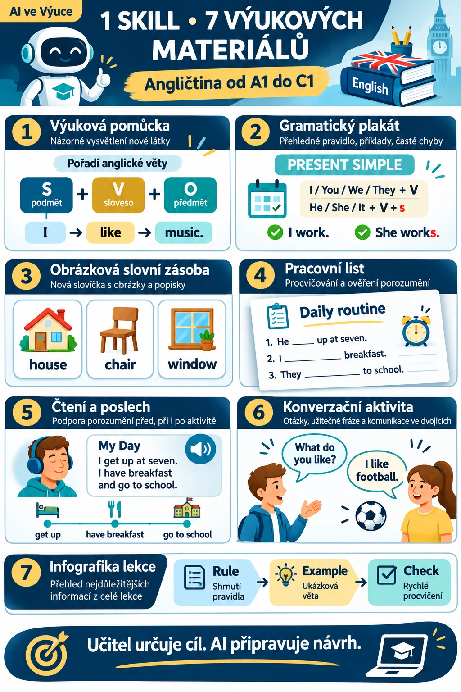

Co je SKILL a čím se liší od běžného promptu?
Prompt je jednorázové zadání, například „Vytvoř pracovní list na Present Simple pro žáky úrovně A1.“
SKILL je podrobnější návod, který může AI používat opakovaně. Obsahuje pravidla, jednotlivé postupy, kontrolní seznamy i příklady. Náš SKILL vede asistenta k tomu, aby přizpůsobil jazyk věku a úrovni žáků, vycházel z výukového cíle, oddělil řešení pro učitele, postupoval od vysvětlení k procvičování a předložil materiál ke kontrole.
English Teaching Materials 1.0 je otevřený balíček instrukcí ve formátu Agent Skills. Není to samostatná aplikace ani generátor obrázků a nezaručuje bezchybný výstup.
Sedm druhů materiálů v jednom balíčku
1. Názorná výuková pomůcka (Teaching Visual)
Jednoduché schéma, diagram nebo obrázek vysvětluje jeden jazykový jev, například slovosled anglické věty nebo rozdíl mezi dvěma tvary.
2. Gramatický plakát (Grammar Poster)
Přehled pravidel, vzorců, krátkých příkladů a častých chyb pro témata jako Present Simple nebo Present Continuous. Důležitá je přesnost, ne množství dekorací.
3. Obrázková slovní zásoba (Vocabulary Visual)
Slova propojená s významem, situací nebo ilustrací, například pro bydlení, rodinu, školu či každodenní činnosti. Při zadaném seznamu se ho AI musí držet.
4. Pracovní list (Classroom Worksheet)
Stupňované úkoly s jasnými instrukcemi, místem na odpovědi a samostatným klíčem; od rozpoznání tvaru až po vlastní věty.
5. Vizuální podpora čtení a poslechu (Reading / Listening Visual)
Časová osa, přehled postav, klíčová slovní zásoba, situační schéma nebo tabulka pro práci před, během či po textu nebo nahrávce. AI nesmí předstírat znalost nedodaného zdroje.
6. Konverzační aktivita (Speaking Activity Visual)
Role, komunikační úkoly, užitečné fráze a otázky pro dvojice či skupiny. Cílem je skutečná výměna informací, ne mechanické odpovědi.
7. Infografika lekce (Lesson Infographic)
Stručné shrnutí pravidel, příkladů a hlavních poznatků z lekce pro opakování, samostudium nebo přípravu před testem.

Jak SKILL získat?
Kompletní balíček English Teaching Materials 1.0 si stáhněte níže jako ZIP. Po rozbalení najdete `SKILL.md`, stručný `README.md`, adresář `references` se sedmi metodickými režimy, vzorem zadání a kontrolou kvality a adresář `examples` s ukázkovým pracovním listem Present Simple (A1). Složku zachovejte pohromadě.
Jak SKILL dostat do chatbota?
Postup závisí na funkcích konkrétního nástroje a účtu. Nahrání souborů do chatu není samo o sobě nativní instalací Agent Skills.
ChatGPT: projekt nebo běžná konverzace
- Pokud máte dostupné Projekty, vytvořte projekt například „Výuka angličtiny“.
- Přidejte obsah `SKILL.md` do instrukcí projektu; pokud vaše prostředí přijímá příslušné soubory, přiložte také reference a příklad. Případně vložte potřebný obsah přímo do chatu.
- Požádejte asistenta, aby při tvorbě materiálů vycházel z těchto instrukcí, a zadejte konkrétní úkol.
ChatGPT umí v Projektech pracovat s instrukcemi a přiloženými zdroji, ale to není totéž jako nativní instalace Agent Skills. Počet a typ souborů a dostupnost Projektů se mohou lišit podle plánu a nastavení účtu. Návod OpenAI k Projektům.
Claude: vlastní Skills, pokud jsou ve vašem prostředí dostupné
- Stáhněte ZIP se složkou `english-teaching-materials`.
- V Claude otevřete nastavení Skills (například v části Customize/Capabilities, pokud ji vaše prostředí nabízí) a nahrajte ZIP podle pokynů aplikace.
- Ověřte, že se Skill načetl, a vyzkoušejte konkrétní zadání.
Dostupnost správy vlastních Skills se může lišit podle prostředí, účtu či pracovního prostoru. Pokud funkci nemáte, přidejte `SKILL.md` a potřebné reference do Projektu nebo konverzace jako běžné podklady; tím se z nich nestane nativně instalovaný Skill. Představení Agent Skills od Anthropic.
Gemini: vlastní Gem
- V Gemini, pokud máte funkci Gems dostupnou, vytvořte nový Gem.
- Vložte hlavní pravidla z `SKILL.md` do instrukcí.
- Pokud rozhraní nabízí přidání znalostních souborů, připojte také relevantní reference.
- Gem uložte a vyzkoušejte na konkrétním zadání.
Gem používá vlastní instrukce a případné připojené zdroje; nejde o nativní instalaci Agent Skills. Dostupnost Gemů, nahrávání souborů a jejich limity se mohou lišit. Nápověda Google k vlastním Gemům.
Další agenti s podporou Agent Skills
U nástroje, který tento otevřený formát přímo podporuje, se instaluje celá složka s `SKILL.md` a souvisejícími soubory. Konkrétní umístění a postup určuje daná aplikace; viz specifikace Agent Skills.
Vyzkoušejte si ho na jedné lekci
Pokud má váš asistent k dispozici SKILL nebo jeho instrukce, můžete zadat například:
Použij English Teaching Materials, režim Classroom Worksheet. Připrav pracovní list na Present Simple pro žáky druhého ročníku střední odborné školy, úroveň A1. Cílem je správně tvořit kladné a záporné věty a jednoduché otázky. Materiál má být na 15 minut, obsahovat čtyři postupně náročnější aktivity a samostatný klíč pro učitele. Nepoužívej odbornou slovní zásobu.
Pokud máte tematický plán, seznam slov nebo text, přiložte ho; AI pak může materiál lépe navázat na skutečnou lekci. Do externích nástrojů nevkládejte identifikační údaje ani citlivé informace o žácích.
Co SKILL sám o sobě nedokáže?
SKILL nenahradí generátor obrázků, PDF editor ani přístup k učebnicím, školním dokumentům nebo NotebookLM. Popisuje pracovní postup; konkrétní výstup závisí na schopnostech a oprávněních použitého nástroje.
Před použitím ověřte správnost angličtiny, přiměřenost obtížnosti, klíč odpovědí, čitelnost při tisku a shodu obrázků s popisky. Učitel odpovídá také za legální použití zdrojů a ochranu údajů žáků.
Proč to stojí za vyzkoušení?
Výhodou není jen rychlost. SKILL pomáhá opakovaně uplatňovat stejné didaktické zásady a zpřesňovat zadání. Učitel nemusí pokaždé znovu vysvětlovat, že pracovní list má mít postupně těžší úkoly, samostatný klíč nebo jazyk odpovídající žákům.
Učitel určuje cíl. AI připravuje návrh. Učitel rozhoduje, co půjde do výuky.
Stáhněte si English Teaching Materials 1.0
Balíček je zdarma. Licence: CC BY 4.0. Autor: AI ve Výuce. Metodika nově zpracovává inspiraci sedmi kategoriemi výukových promptů veřejně sdílených ELS Language Studies; nejde o oficiální produkt, podporu ani schválení ELS.